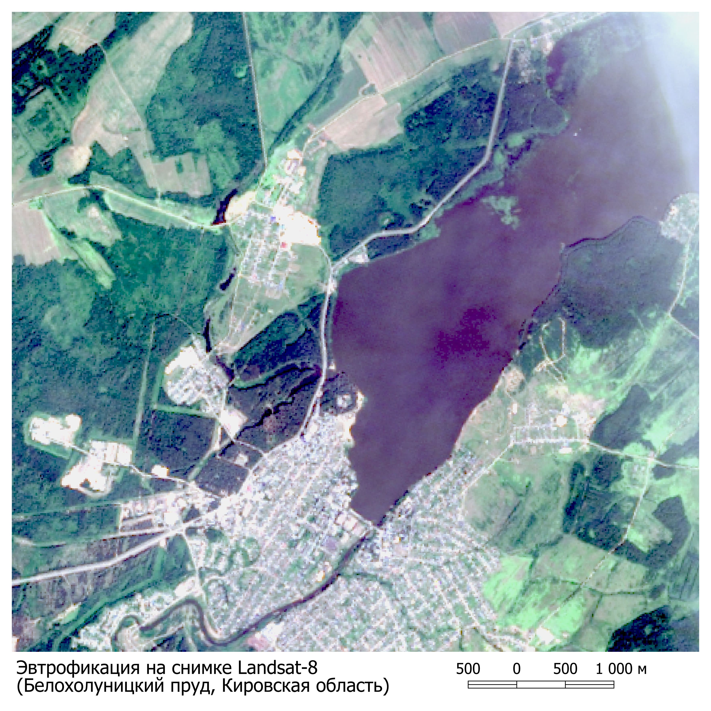
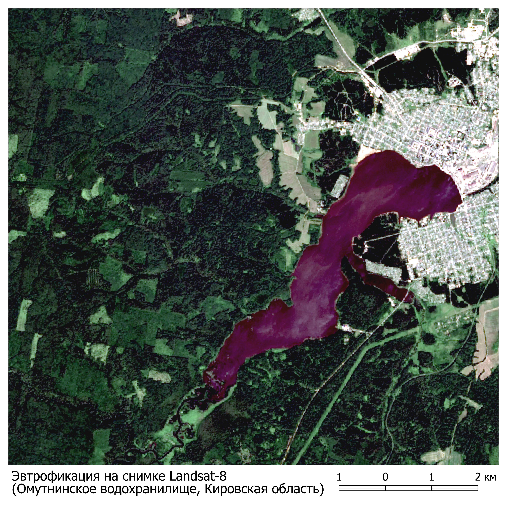

Восточное побережье Азовского моря
46°34'16.6"N 37°55'02.5"E

Белохолуницкий пруд, Кировская область
58°52'45"N 50°54'12"E
Север Каспийского моря
46°35'39.0"N 50°21'21.2"E

Северо-восток Гвинейского залива
3°55'51.1"N 7°50'41.8"E

Омутнинское водохранилище, Кировская область
58°38'22.8"N 52°07'29.3"E
